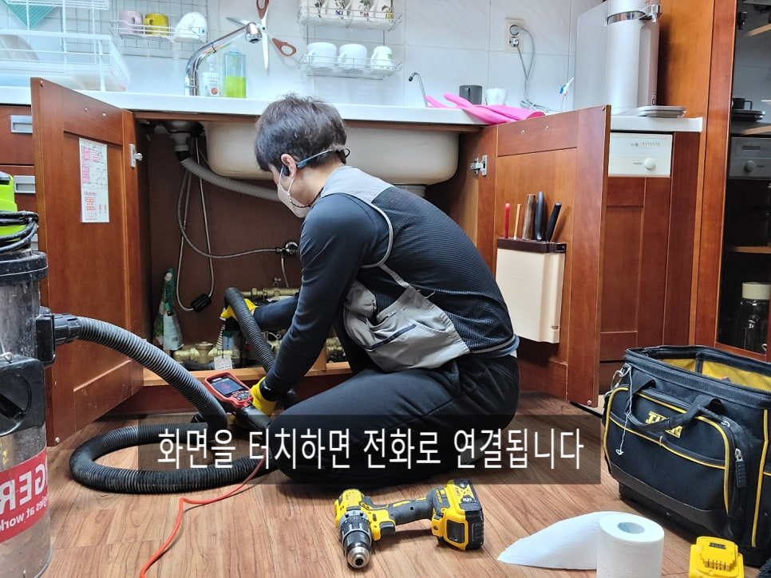
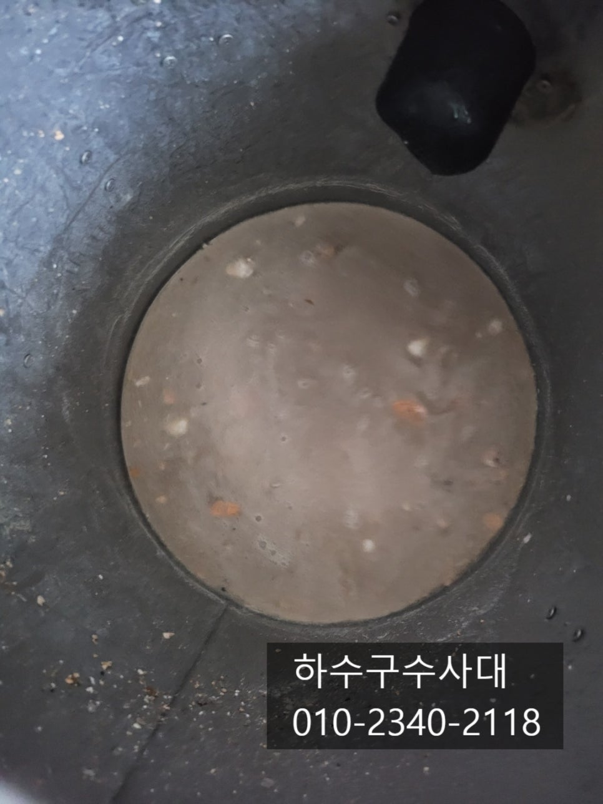
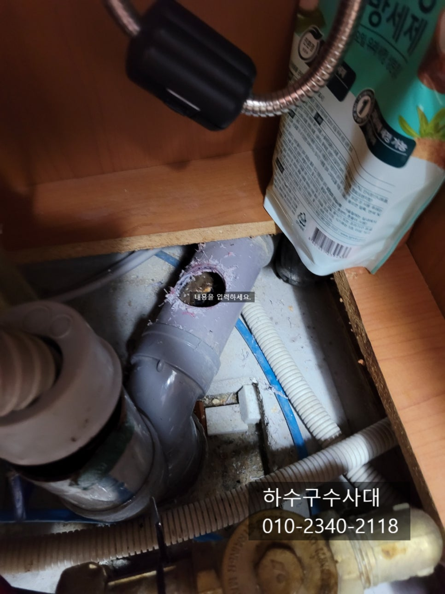
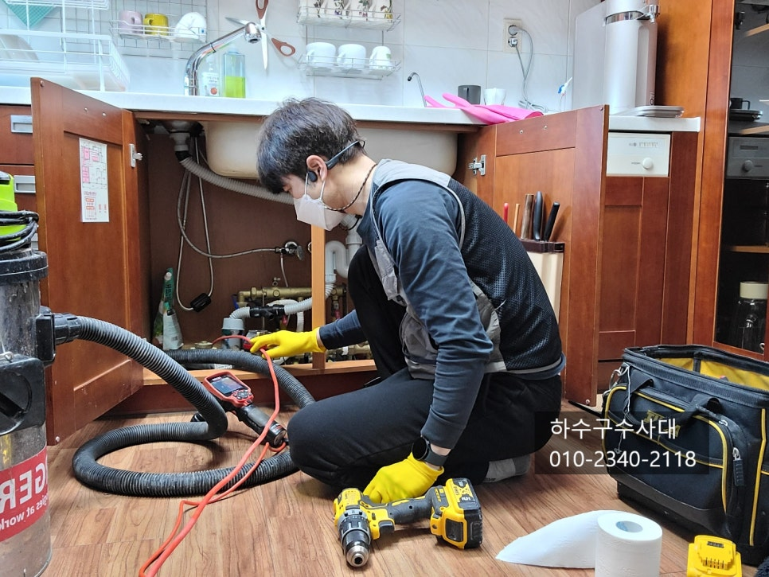
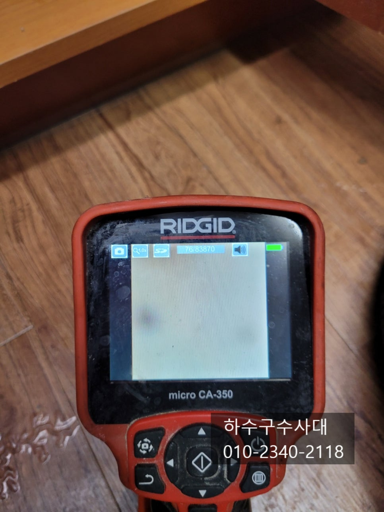
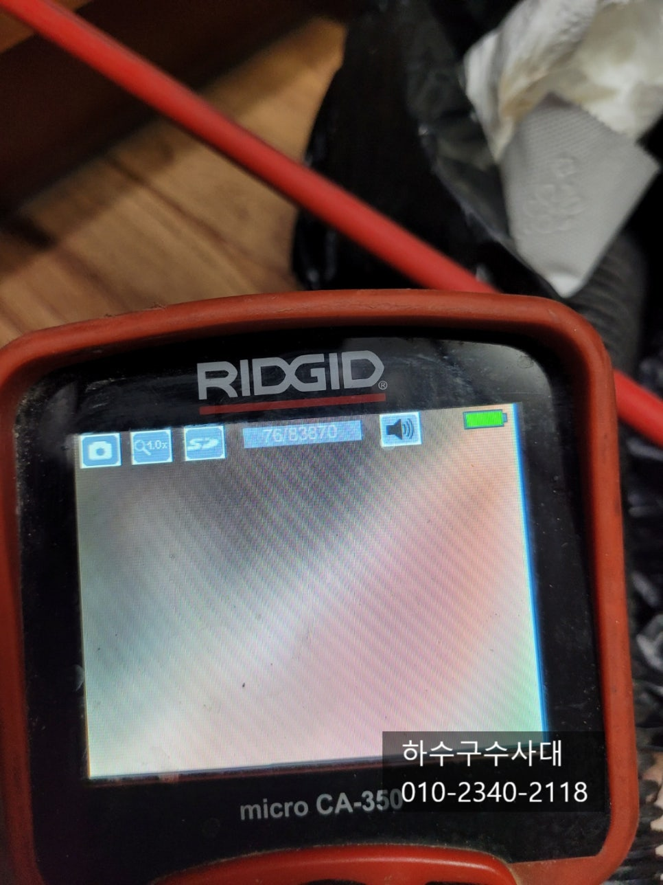

🏠 권선구하수구막힘 권선동 호매실동 오목천동 하수구청소
수원 싱크대막힘 전문 시공 후기

📋 작업 개요
- 위치: 수원
- 서비스 유형: 싱크대막힘, 하수구막힘, 배관막힘, 역류해결, 뚫는업체, 배관청소, 고압세척, 악취차단
- 작업 일시: 2022. 1. 1. 17:29
- 업체명: 하수구수사대 (010-5615-2118)
🔍 문제 상황
권선구하수구막힘 권선동 호매실동 오목천동 하수구청소
안녕하세요
"하수구수사대" 인사드립니다.
오늘은 새해 첫날로 모든분들 새해 더욱 건강하시고
하시는일 잘 되시리라 믿습니다^^
오늘은 싱크대하수구에서 물이 역류하는것을 보시고 연락을 주셔서
"하수구수사대"가 출동한 현장을 포스팅 해보겠습니다.
오늘 방문한 아파트는 현대아이파크 였는데요
현대아파트는 타 브랜드 아파트와 달리 노출된 배관에
소재구가 달려있는것을 볼수 있습니다.
싱크대호스가 연결되고 밑에 하단에 큰 이물질과 냄새를
차단해주는 p트랩구조입니다.
p트랩구조는 장비가 진입되지 않기 때문에
설비하시는 분들께서 꺼려하는 작업이기도 합니다.
이유는 소재구를 열어야 하는데 땅바닥에 거의 붙어있어
열리지도 않고 열려도 장비를 넣을수가
없으니 어떤 생각으로 만들었는지 이해가 되지
않는 부분이에요.
먼저 기본적으로 석션작업을 해주었는데요
석션작업은 내부에 이물질을 흡입하는 작업으로

🔎 원인 분석
💡 전문가 진단: 하수구수사대010-2340-2118
단순막힘의 경우 모두 해결이 된다고 보시면 됩니다.
단점이라고 한다면 하수구에서 이물을 뽑아내기 때문에
악취가 나게 되는 불편함은 감소해야합니다^^
석션통에 기름슬러지 덩어리가 제법 나왔는데요
하지만 물을 틀어보니 다시 역류하는 상태를 확인할수가
있었어요. 하수구에 이물질이 굉장히 많다고 판단이
되는데요 장비가 들어가지 못하기 때문에
배관을 자르거나 타공을 해서 작업을 진행하기로
했습니다.
하수구수사대
010-2340-2118
다행히 타공할 공간이 나와 구멍을 내고
내시경카메라로 하수구내부를 확인하였는데요
앞이 보이지 않을 정도로 기름덩어리로 막혀 있어
진입이 되지 않았습니다.
고객께서 20년동안 사용을하다보니 기름이
많이 쌓였을거라고 하셨어요. 아무래도
20년이면 배관구조 문제보다는 오랜기간
사용해서 기름이 붙었을거라고 생각을 했는데요
대부분 구조적으로 구배가 좋지않아 배관에 물이 고여

🔧 작업 과정
기름이 배관에 붙는 경우가 많답니다.
하지만 하수구배관은 내시경카메라로 확인을 하지 않는이상
배관구배가 어떻게 되어있는지 확인할수가 없어
평소 습관대로 대부분 사용을 하신답니다.
하수구를 뚫는 장비를 여러가지가 있는데요
설비하시는 분들이라면 대부분 스프링장비를 가지고
다니는데요 오늘 현장처럼 배관에 기름이 많은 하수구배관은
내시경카메라로 깨끗하게 기름이 제거가 되었는지
확인을 해야하기 때문에 필수로 병행작업을 해야합니다.
"하수구수사대"는 하수구전문업체로 내시경카메라는
물론 고압세척,관로탐지,플렉스샤프트 등등 최신장비를
보유하고 있으니 믿고 맡기셔도 된답니다^^
플렉스샤프트 장비로 하수구청소를 하고 있는 영상인데요
앞쪽에 체인이 회전을 하면서 기름을 완벽하게 제거한답니다^^
내시경으로 구간구간 기름이 있는곳을 확인하고 제거하고
확인작업도 필수로 진행되기 때문에 자신있게 as를 보장해드리고
있습니다.
작업을 마치고나면 내시경카메라로 내부구조와 구배를
보는데 위 사진처럼 배관에 물이 조금 고여있는 구간이
확인이 되었는데요 하지만 심하지는 않지만
기름이 정체될수 있기 때문에 설거지를 하면서 물을
충분히 흘려보내고 한달에 한번씩 펑크린같은 배관
세정제를 넣어 기름을 제거해주는 습관이 필요합니다.
내시경카메라를 하수구에 넣어놓고 물을 흘려보내니
막힘 없이 잘 흘러내려가는것을 확인할수 있습니다.
간혹 청소진행하는 과정에서 싱크대호스나 타 이물질이
발견되기도 하니 내시경카메라로 확인 작업은 필수로
이어져야합니다^^
배관타공한 부분은 같은사이즈의 배관으로 매꿔주는데요
위쪽부분을 타공하였기 때문에 물이 새어 나오지는 않지만
그래도 냄새가 날수 있기때문에 전용본드로 꼼꼼하게
매꿔 주었습니다^^


✅ 작업 완료
마지막으로 싱크대쪽에 물을 받아서 한번에
물을 부어 호스나 하수구에서 물이 역류되지는
않는데 한번더 체크를 해주고 마무리가
된 현장입니다^^
저희 "하수구수사대"는 서울,경기,인천 전지역에서
활동하고 있으며 즉각 출동할수 있도록
인원이 배치되어 있으니 하수구막힘으로
고민중이시라면 언제든지 연락주세요^^
경기도 수원시 권선구 곡반정로97번길 9 5층




⚠️ 주방 싱크대 배관 막힘 예방 수칙
- ✅ 기름기가 묻은 식기나 프라이팬은 설거지 전 키친타올로 반드시 기름때를 닦아내세요.
- ✅ 주기적으로 싱크대 개수대에 뜨거운 물을 가득 받아 한 번에 내려 배관 내부 기름을 씻어내세요.
- ✅ 배수구 거름망을 미세한 필터로 사용하시고 음식물 찌꺼기가 틈으로 새어 들지 않게 관리하세요.
- ✅ 베이킹소다와 식초를 뜨거운 물과 함께 일주일에 한 번씩 부어주면 배관 살균과 막힘 예방에 좋습니다.
💡 핵심 정리
- 확실한 장비 작업(내시경 점검 및 샤프트 스케일링)으로 원인을 뿌리 뽑습니다.
- 작업 후 1년 이내에 동일한 부위 재발 시 100% 무상 A/S 서비스를 보장합니다.
- 서울 · 경기 · 인천 전 지역에 24시간 언제든 긴급 출동할 수 있도록 항시 대기 중입니다.
❓ 자주 묻는 질문 (FAQ)
🚨 수원 싱크대막힘 문제로 고민이신가요?
정확한 원인 진단과 확실한 시공으로 재발 없는 해결을 약속드립니다.
24시간 긴급 출동 | 서울 · 경기 · 인천 전지역 | 1년 내 재발 시 무상 A/S